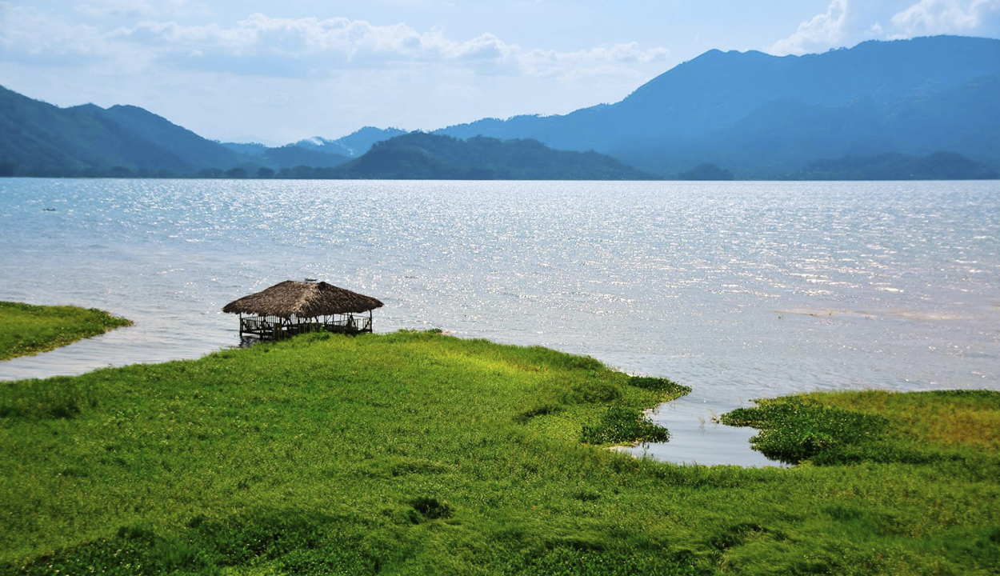
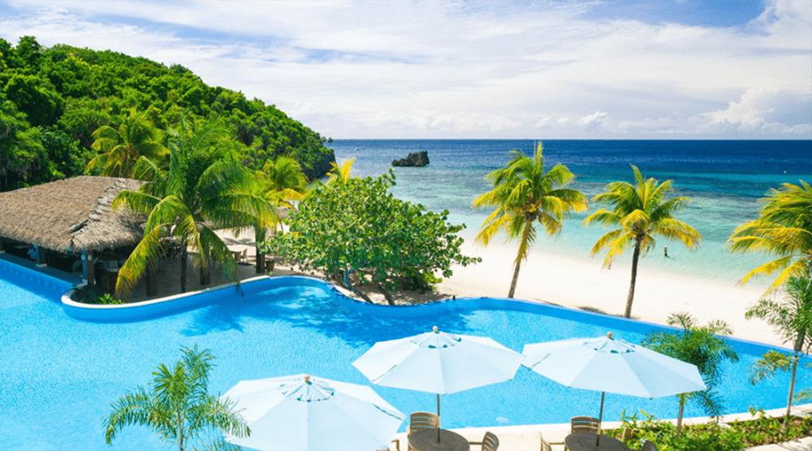
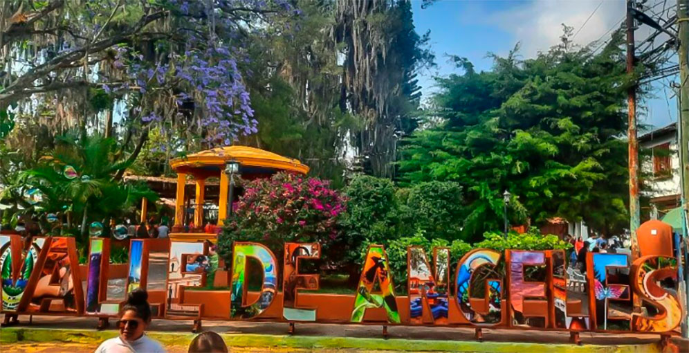
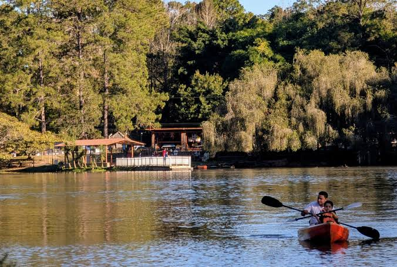

Rutas y Destinos HN
Descubre los lugares que Honduras tiene para ofrecerte.
Descubre tu proximo destino.
Tu proximo destino puede estar cerca o lejos, pero seguro sera increíble.

Parque Arqueológico de Copán Ruinas
Ubicación: Copán, Honduras
Descripción: las impresionantes ruinas mayas de Copán, un sitio arqueológico declarado Patrimonio de la Humanidad por la UNESCO.
Actividades: Exploración arqueológica, fotografía, senderismo.
ideal para: amantes de la historia, fotografía, y aventuras al aire libre.
Precio:
- Entrada general 100 L
- Tuneles 50 L
- Estudiantes 40 L
- Tercera edad y personas con discapacidad 50 L
- Niños menores de 6 años gratis

Roatan
Ubicación: Islas de la Bahía, Honduras
Descripción: Isla paradisíaca conocida por sus aguas cristalinas y su biodiversidad marina.
Actividades: Buceo, snorkel, pesca, senderismo.
ideal para: amantes del mar, deportes acuáticos, y aventuras al aire libre.
Precio:
En ferry
- Clase Regular Adultos: 1730 L
- Primera clase adultos: 1930 L
- Tercera Edad (60+): 1378 L
- Niños (5-10 años):936 L
- Niños (0-4 años): gratis

Valle de Angeles
Ubicación: Valle de Angeles, Honduras
Descripción: Valle de Angeles es un área natural protegida que alberga una gran diversidad de flora y fauna, siendo uno de los lugares más bellos de Honduras.
Actividades: Exploración natural, fotografía, senderismo, miradores.
ideal para: amantes de la naturaleza, fotografía, y aventuras al aire libre.
Lugares para visitar: Río Angeles, Cascadas de Santa Elena, Bosque Nubos, Plaza Robles, Sin rumbo.
Accesibilidad: El área está diseñada para ser accesible a personas con movilidad reducida.
Precio: Los precios varian segun el lugar y la actividad seleccionada.
Reservar visita
Parque Aurora
Ubicación:Tegucigalpa, Francisco Morazan, zambrano
Descripción: Parque Aurora es un espacio natural que ofrece una experiencia única de exploración y disfrute al aire libre.
Actividades:Paseos en lacha de remo, kayaks, bicicletas acuáticas, Piscinas, Casa de la risa
ideal para: familias, amigos, y personas que disfrutan de la naturaleza y las actividades al aire libre.
Precio:
- Entrada general 50 L
- Niños de (4-12) 40 L
- Tercera edad 25 L
- Niños menores de 4 años gratis
Planifica Tu viaje
Planifica tu viaje a Honduras con nuestra guía completa de destinos, actividades y consejos para aprovechar al máximo tu experiencia.
| Destino | Distacia | Actitud | Tiempo de Traslado | Dificultad |
|---|---|---|---|---|
| Parque Arqueológico de Copán Ruinas | 400 km | 600 m | 6 horas | Media |
| Roatan | 300 km | 0 m | 5 horas | Baja |
| Valle de Angeles | 20 km | 1,200 m | 30 minutos | Baja |
| Parque Aurora | 10 km | 1,000 m | 20 minutos | Baja |
¿Listo para tu próximo viaje?
¡Planifica tu próxima aventura en Honduras con nuestra guía completa de destinos y actividades!
Reservar ahora